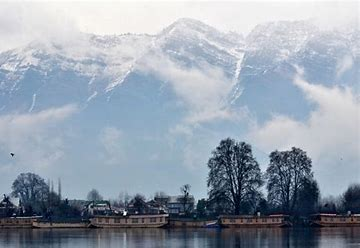
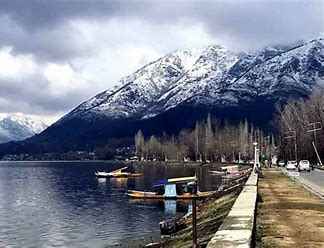

The Zabarwan Range is a short sub-mountain range between Pir Panjal and the Great Himalayan Range in the central part of the Kashmir Valley. Specifically, the range is known to be what overlooks the Dal Lake and holds the Mughal gardens of Srinagar. The Shankaracharya Temple is built on the edge of the central part of the Zabarwan Range. The highest peak of this range is Mahadev Peak at 13,013 feet (3,966 m), which forms the distant background of the eastern mountain wall. On the northern slopes of the central part of the range, there are three Mughal gardens built by Emperor Shah Jahan. These include Chashma Shahi, Nishat Bagh and Shalimar Garden alongside the Pari Mahal (the fairy palace). The Dachigam National Park is the main feature of the range which holds the last viable population of Kashmir stag (Hangul) and the largest population of black bear in Asia.
Zabarwan Range

| Zabarwan Range | |
|---|---|
|  | |
| Highest Peak | |
| Peak | Mahadev Peak |
| Length | 20 mi (32 km) N-W |
| Elevation | 3,966 m (13,012 ft) |
| Coordinates | 34°09′09″N 74°59′14″E |
| Geography | |
| Countries | India |
| Borders on | Jammu and Kashmir |